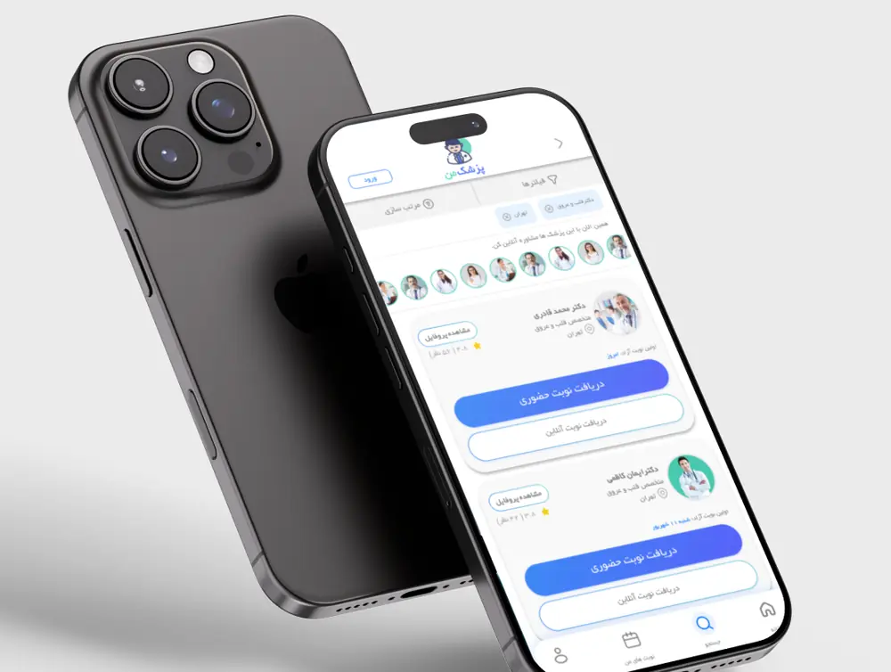
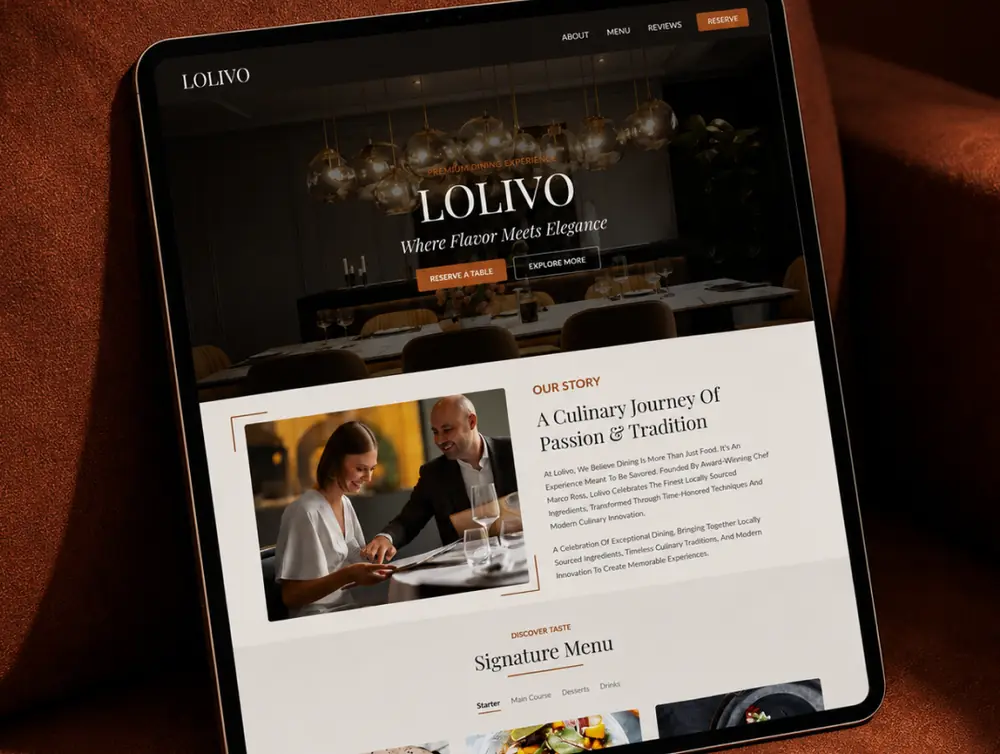

Selected work / UX & UI
Digital work with a point of view.
A selection of interface and web projects focused on clarity, hierarchy, atmosphere and ease of use.

01
työ
AI customer messaging redesign.
View case study →
02
My Doctor
An RTL doctor booking app.
View case study →
03
Lolivo
A fine-dining landing page built around atmosphere and an effortless path to booking.
View case study →